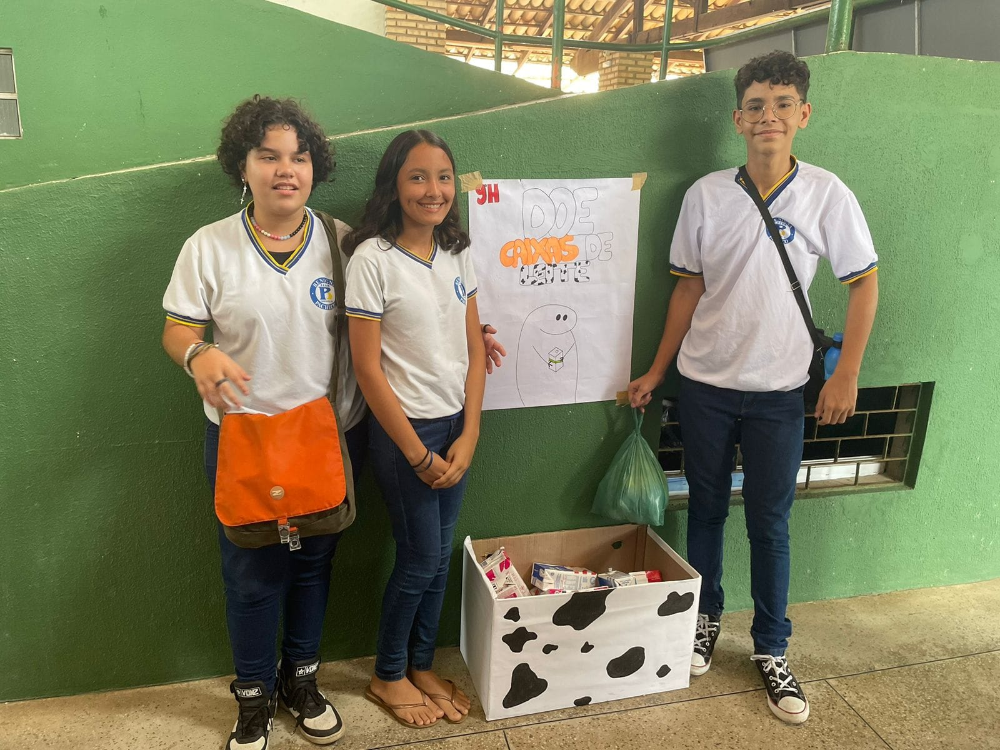

Meu portifolio
Olá, eu sou a Antônia Naylane, tenho 14 anos e estudo no 9º ano da Escola Benigna Pacheco na cidade de Cascavel-Ce. Eu criei este portifolio para mostrar os meus trabalhos escolares e as minhas atividades extracurriculares que eu mais gostei de fazer. O meu objetivo é ingressar no ensino médio técnico em meio ambiente, pois eu tenho muito interesse em aprender sobre sustentabilidade e ecologia. Espero que você goste do meu portifolio e conheça um pouco mais sobre mim e o meu potencial.
Este é um dos trabalhos que eu mais me orgulho de ter feito. Foi um projeto de ciências que eu e os meus colegas desenvolvemos para a feira da escola. O nosso objetivo era produzir um tijolo ecológico usando materiais recicláveis, como cascas de ovos e caixas de leite . Nós pesquisamos sobre como fazer o tijolo, quais eram os benefícios ambientais e econômicos dessa ideia e como aplicá-la na construção civil. Nós seguimos um passo a passo que encontramos na internet e conseguimos fazer o nosso próprio tijolo. O resultado foi muito satisfatório, pois o tijolo ficou resistente, bonito e sustentável. Nós apresentamos o nosso trabalho na feira da escola e fomos selecionados para participar da fase municipal. Foi uma experiência incrível, pois eu aprendi muito sobre ciência, meio ambiente e trabalho em equipe.



Para produzir o nosso tijolo nós seguimos as seguintes fases:
1. Coletamos os materiais recicláveis que iríamos usar: cascas de ovos e caixas de leite. Nós também compramos argila .
2. Trituramos as cascas de ovos usando um liquidificador e misturamos com a argila até formar uma massa homogênea. Essa massa seria a base do nosso tijolo.
3. Cortamos as caixas de leite em pedaços pequenos. Esses pedaços seriam o recheio do nosso tijolo, para dar mais resistência e leveza.
4.Juntamos os pedaços com a massa de argila e casca de ovo. Usamos algumas das caixas de leite não cortadas para usarmos de forma. E usamos as mãos para alisar a superfície do tijolo.
4. Deixamos o tijolo secar ao sol por dois dias, virando-o de vez em quando para secar por igual.
5. Retiramos o tijolo da forma e depois de alguns dias levamos para assar.
6. Por fim, lixamos para dar um acabamento melhor e mais bonito
Usamos também essa mistura para fazermos vasinhos de flores para darmos aos jurados e a alguns professores. As flores foram feitas de papeis recicláveis.Nós encontramos algumas dificuldades durante a produção, como triturar as cascas de ovos, cortar as caixas de leite e alisar a massa de argila. Mas nós conseguimos superar esses desafios com paciência, criatividade e cooperação.